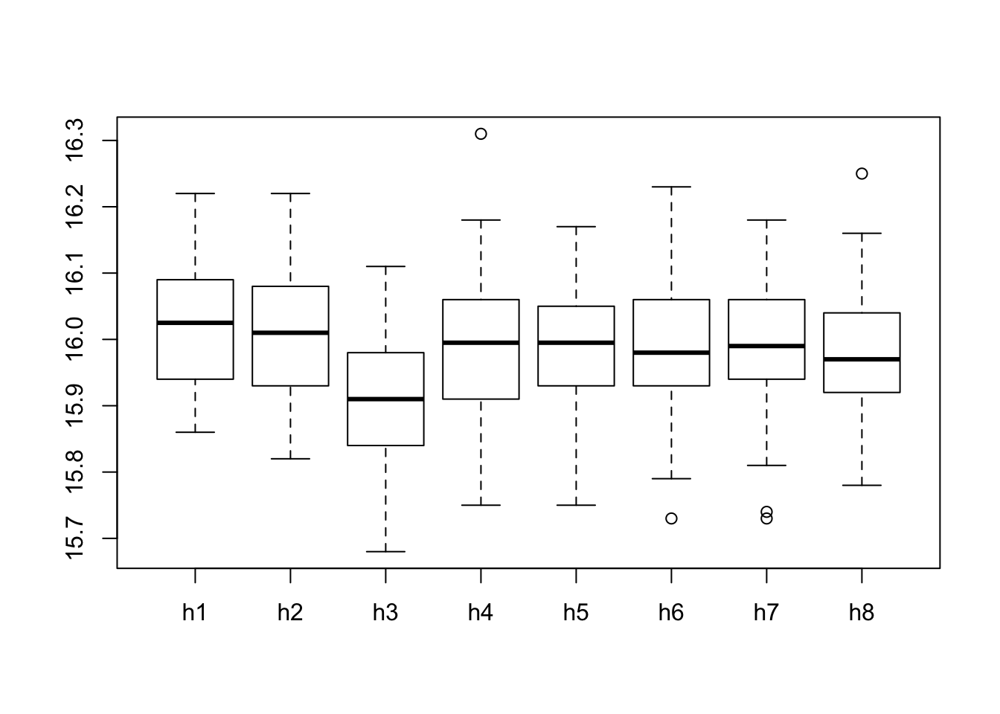

Chapter 8 Overview and Integration
8.1 Student Learning Objective
This section provides an overview of the concepts and methods that where presented in the first part of the book. We attempt to relate them to each other and put them in prospective. Some problems are provided. The solutions to these problems require combinations of many of the tools that were presented in previous chapters. By the end of this chapter, the student should be able to:
Have a better understanding of the relation between descriptive statistics, probability, and inferential statistics.
Distinguish between the different uses of the concept of variability.
Integrate the tools that were given in the first part of the book in order to solve complex problems.
8.2 An Overview
The purpose of the first part of the book was to introduce the fundamentals of statistics and teach the concepts of probability which are essential for the understanding of the statistical procedures that are used to analyze data. These procedures are presented and discussed in the second part of the book.
Data is typically obtained by selecting a sample from a population and taking measurements on the sample. There are many ways to select a sample, but all methods for such selection should not violate the most important characteristic that a sample should posses, namely that it represents the population it came from. In this book we concentrate on simple random sampling. However, the reader should be aware of the fact that other sampling designs exist and may be more appropriate in specific applications. Given the sampled data, the main concern of the science of statistics is in making inference on the parameter of the population on the basis of the data collected. Such inferences are carried out with the aid of statistics, which are functions of the data.
Data is frequently stored in the format of a data frame, in which
columns are the measured variable and the rows are the observations
associated with the selected sample. The main types of variables are
numeric, either discrete or not, and factors. We learned how one can
produce data frames and read data into R for further analysis.
Statistics is geared towards dealing with variability. Variability may emerge in different forms and for different reasons. It can be summarized, analyzed and handled with many tools. Frequently, the same tool, or tools that have much resemblance to each other, may be applied in different settings and for different forms of variability. In order not to loose track it is important to understand in each scenario the source and nature of the variability that is being examined.
An important split in term of the source of variability is between descriptive statistics and probability. Descriptive statistics examines the distribution of data. The frame of reference is the data itself. Plots, such as the bar plots, histograms and box plot; tables, such as the frequency and relative frequency as well as the cumulative relative frequency; and numerical summaries, such as the mean, median and standard deviation, can all serve in order to understand the distribution of the given data set.
In probability, on the other hand, the frame of reference is not the data at hand but, instead, it is all data sets that could have been sampled (the sample space of the sampling distribution). One may use similar plots, tables, and numerical summaries in order to analyze the distribution of functions of the sample (statistics), but the meaning of the analysis is different. As a matter of fact, the relevance of the probabilistic analysis to the data actually sampled is indirect. The given sample is only one realization within the sample space among all possible realizations. In the probabilistic context there is no special role to the observed realization in comparison to all other potential realizations.
The fact that the relation between probabilistic variability and the observed data is not direct does not make the relation unimportant. On the contrary, this indirect relation is the basis for making statistical inference. In statistical inference the characteristics of the data may be used in order to extrapolate from the sampled data to the entire population. Probabilistic description of the distribution of the sample is then used in order to assess the reliability of the extrapolation. For example, one may try to estimate the value of population parameters, such as the population average and the population standard deviation, on the basis of the parallel characteristics of the data. The variability of the sampling distribution is used in order to quantify the accuracy of this estimation. (See Example 5 below.)
Statistics, like many other empirically driven forms of science, uses
theoretical modeling for assessing and interpreting observational data.
In statistics this modeling component usually takes the form of a
probabilistic model for the measurements as random variables. In the
first part of this book we have encountered several such models. The
model of simple sampling assumed that each subset of a given size from
the population has equal probability to be selected as the sample.
Other, more structured models, assumed a specific form to the
distribution of the measurements. The examples we considered were the
Binomial, the Poisson, the Uniform, the Exponential and the Normal
distributions. Many more models may be found in the literature and may
be applied when appropriate. Some of these other models have R
functions that can be used in order to compute the distribution and
produce simulations.
A statistic is a function of sampled data that is used for making statistical inference. When a statistic, such as the average, is computed on a random sample then the outcome, from a probabilistic point of view, is a random variable. The distribution of this random variable depends on the distribution of the measurements that form the sample but is not identical to that distribution. Hence, for example, the distribution of an average of a sample from the Uniform distribution does not follow the Uniform distribution. In general, the relation between the distribution of a measurement and the distribution of a statistic computed from a sample that is generated from that distribution may be complex. Luckily, in the case of the sample average the relation is rather simple, at least for samples that are large enough.
The Central Limit Theorem provides an approximation of the distribution of the sample average that typically improves with the increase in sample size. The expectation of the sample average is equal to the expectation of a single measurement and the variance is equal to the variance of a single measurement, divided by the sample size. The Central Limit Theorem adds to this observation the statement that the distribution of the sample average may be approximated by the Normal distribution (with the same expectation and standard deviation as those of the sample average). This approximation is valid for practically any distribution of the measurement. The conclusion is, at least in the case of the sample average, that the distribution of the statistic depends on the underlying distribution of the measurements only through their expectation and variance but not through other characteristics of the distribution.
The conclusion of the theorem extends to quantities proportional to the sample average. Therefore, since the sum of the sample is obtained by multiplying the sample average by the sample size \(n\), we get that the theorem can be used in order to approximate the distribution of sums. As a matter of fact, the theorem may be generalized much further. For example, it may be shown to hold for a smooth function of the sample average, thereby increasing the applicability of the theorem and its importance.
In the next section we will solve some practical problems. In order to solve these problems you are required to be familiar with the concepts and tools that were introduced throughout the first part of the book. Hence, we strongly recommend that you read again and review all the chapters of the book that preceded this one before moving on to the next section.
8.3 Integrated Applications
The main message of the Central Limit Theorem is that for the sample average we may compute probabilities based on the Normal distribution and obtain reasonable approximations, provided that the sample size is not too small. All we need to figure out for the computations are the expectation and variance of the underlying measurement. Otherwise, the exact distribution of that measurement is irrelevant. Let us demonstrate the applicability of the Central Limit Theorem in two examples.
8.3.1 Example 1
A study involving stress is done on a college campus among the students. The stress scores follow a (continuous) Uniform distribution with the lowest stress score equal to 1 and the highest equal to 5. Using a sample of 75 students, find:
The probability that the average stress score for the 75 students is less than 2.
The 90th percentile for the average stress score for the 75 students.
The probability that the total of the 75 stress scores is less than 200.
The 90th percentile for the total stress score for the 75 students.
Solution:
Denote by \(X\) the stress score of a random student. We are given that \(X \sim \mathrm{Uniform}(1,5)\). We use the formulas \(\Expec(X) = (a+b)/2\) and \(\Var(X) = (b-a)^2/12\) in order to obtain the expectation and variance of a single observation and then we use the relations \(\Expec(\bar X) = \Expec(X)\) and \(\Var(\bar X) = \Var(X)/n\) to translated these results to the expectation and variance of the sample average:
a <- 1
b <- 5
n <- 75
mu.bar <- (a+b)/2
sig.bar <- sqrt((b-a)^2/(12*n))
mu.bar## [1] 3sig.bar## [1] 0.1333333After obtaining the expectation and the variance of the sample average
we can forget about the Uniform distribution and proceed only with the
R functions that are related to the Normal distribution. By the
Central Limit Theorem we get that the distribution of the sample average
is approximately \(\mathrm{Normal}(\mu, \sigma^2)\), with \(\mu\) = mu.bar
and \(\sigma\) = sig.bar.
In the Question 1.1 we are asked to find the value of the cumulative distribution function of the sample average at \(x=2\):
pnorm(2,mu.bar,sig.bar)## [1] 3.190892e-14The goal of Question 1.2 is to identify the 90%-percentile of the sample average:
qnorm(0.9,mu.bar,sig.bar)## [1] 3.170874The sample average is equal to the total sum divided by the number of observations, \(n=75\) in this example. The total sum is less than 200 if, and only if the average is less than \(200/n\). Therefore, for Question 1.3:
pnorm(200/n,mu.bar,sig.bar)## [1] 0.006209665Finally, if 90% of the distribution of the average is less that 3.170874 then 90% of the distribution of the total sum is less than \(3.170874\, n\). In Question 1.4 we get:
n*qnorm(0.9,mu.bar,sig.bar)## [1] 237.81558.3.2 Example 2
Consider again the same stress study that was described in Example 1 and answer the same questions. However, this time assume that the stress score may obtain only the values 1, 2, 3, 4 or 5, with the same likelihood for obtaining each of the values.
Solution:
Denote again by \(X\) the stress score of a random student. The modified distribution states that the sample space of \(X\) are the integers \(\{1, 2, 3, 4, 5\}\), with equal probability for each value. Since the probabilities must sum to 1 we get that \(\Prob(X = x) = 1/5\), for all \(x\) in the sample space. In principle we may repeat the steps of the solution of previous example, substituting the expectation and standard deviation of the continuous measurement by the discrete counterpart:
x <- 1:5
p <- rep(1/5,5)
n <- 75
mu.X <- sum(x*p)
sig.X <- sum((x-mu.X)^2*p)
mu.bar <- mu.X
sig.bar <- sqrt(sig.X/n)
mu.bar## [1] 3sig.bar## [1] 0.1632993Notice that the expectation of the sample average is the same as before but the standard deviation is somewhat larger due to the larger variance in the distribution of a single response.
We may apply the Central Limit Theorem again in order to conclude that
distribution of the average is approximately
\(\mathrm{Normal}(\mu, \sigma^2)\), with \(\mu\) = mu.bar as before and
for the new \(\sigma\) = sig.bar.
For Question 2.1 we compote that the cumulative distribution function of the sample average at \(x=2\) is approximately equal:
pnorm(2,mu.bar,sig.bar)## [1] 4.570649e-10and the 90%-percentile is:
qnorm(0.9,mu.bar,sig.bar)## [1] 3.209276which produces the answer to Question 2.2.
Similarly to the solution of Question 1.3 we may conclude that the total sum is less than 200 if, and only if the average is less than \(200/n\). Therefore, for Question 2.3:
pnorm(200/n,mu.bar,sig.bar)## [1] 0.02061342Observe that in the current version of the question we have the score is integer-valued. Clearly, the sum of scores is also integer valued. Hence we may choose to apply the continuity correction for the Normal approximation whereby we approximate the probability that the sum is less than 200 (i.e. is less than or equal to 199) by the probability that a Normal random variable is less than or equal to 199.5. Translating this event back to the scale of the average we get the approximation19:
pnorm(199.5/n,mu.bar,sig.bar)## [1] 0.01866821Finally, if 90% of the distribution of the average is less that 3.170874 then 90% of the distribution of the total sum is less than \(3.170874 n\). Therefore:
n*qnorm(0.9,mu.bar,sig.bar)## [1] 240.6957or, after rounding to the nearest integer we get for Question 2.4 the answer 241.
8.3.3 Example 3
Suppose that a market research analyst for a cellular phone company conducts a study of their customers who exceed the time allowance included on their basic cellular phone contract. The analyst finds that for those customers who exceed the time included in their basic contract, the excess time used follows an exponential distribution with a mean of 22 minutes. Consider a random sample of 80 customers and find
The probability that the average excess time used by the 80 customers in the sample is longer than 20 minutes.
The 95th percentile for the average excess time for samples of 80 customers who exceed their basic contract time allowances.
Solution:
Let \(X\) be the excess time for customers who exceed the time included in their basic contract. We are told that \(X \sim \mathrm{Exponential}(\lambda)\). For the Exponential distribution \(\Expec(X) = 1/\lambda\). Hence, given that \(\Expec(X) = 22\) we can conclude that \(\lambda = 1/22\). For the Exponential we also have that \(\Var(X) = 1/\lambda^2\). Therefore:
lam <- 1/22
n <- 80
mu.bar <- 1/lam
sig.bar <- sqrt(1/(lam^2*n))
mu.bar## [1] 22sig.bar## [1] 2.459675Like before, we can forget at this stage about the Exponential distribution and refer henceforth to the Normal Distribution. In Question 2.1 we are asked to compute the probability above \(x=20\). The total probability is 1. Hence, the required probability is the difference between 1 and the probability of being less or equal to \(x=20\):
1-pnorm(20,mu.bar,sig.bar)## [1] 0.7919241The goal in Question 2.2 is to find the 95%-percentile of the sample average:
qnorm(0.95,mu.bar,sig.bar)## [1] 26.04588.3.4 Example 4
A beverage company produces cans that are supposed to contain 16 ounces of beverage. Under normal production conditions the expected amount of beverage in each can is 16.0 ounces, with a standard deviation of 0.10 ounces.
As a quality control measure, each hour the QA department samples 50 cans from the production during the previous hour and measures the content in each of the cans. If the average content of the 50 cans is below a control threshold then production is stopped and the can filling machine is re-calibrated.
Compute the probability that the amount of beverage in a random can is below 15.95.
Compute the probability that the amount of beverage in a sample average of 50 cans is below 15.95.
Find a threshold with the property that the probability of stopping the machine in a given hour is 5% when, in fact, the production conditions are normal.
Consider the data in the file “
QC.csv”20. It contains measurement results of 8 hours. Assume that we apply the threshold that was obtained in Question 4.3. At the end of which of the hours the filling machine needed re-calibration?Based on the data in the file “
QC.csv”, which of the hours contains measurements which are suspected outliers in comparison to the other measurements conducted during that hour?
Solution
The only information we have on the distribution of each measurement is its expectation (16.0 ounces under normal conditions) and its standard deviation (0.10, under the same condition). We do not know, from the information provided in the question, the actual distribution of a measurement. (The fact that the production conditions are normal does not imply that the distribution of the measurement in the Normal distribution!) Hence, the correct answer to Question 4.1 is that there is not enough information to calculate the probability.
When we deal with the sample average, on the other hand, we may apply the Central Limit Theorem in order to obtain at least an approximation of the probability. Observe that the expectation of the sample average is 16.0 ounces and the standard deviation is \(0.1/\sqrt{50}\). The distribution of the average is approximately the Normal distribution:
pnorm(15.95,16,0.1/sqrt(50))## [1] 0.000203476Hence, we get that the probability of the average being less than 15.95 ounces is (approximately) 0.0002, which is a solution to Question 4.2.
In order to solve Question 4.3 we may apply the function “qnorm” in
order to compute the 5%-percentile of the distribution of the average:
qnorm(0.05,16,0.1/sqrt(50))## [1] 15.97674Consider the data in the file “QC.csv”. Let us read the data into a
data frame by the by the name “QC” and apply the function “summary”
to obtain an overview of the content of the file:
QC <- read.csv("_data/QC.csv")
summary(QC)## h1 h2 h3 h4
## Min. :15.86 Min. :15.82 Min. :15.68 Min. :15.75
## 1st Qu.:15.94 1st Qu.:15.93 1st Qu.:15.84 1st Qu.:15.91
## Median :16.02 Median :16.01 Median :15.91 Median :15.99
## Mean :16.02 Mean :16.01 Mean :15.91 Mean :15.99
## 3rd Qu.:16.09 3rd Qu.:16.08 3rd Qu.:15.98 3rd Qu.:16.06
## Max. :16.22 Max. :16.22 Max. :16.11 Max. :16.31
## h5 h6 h7 h8
## Min. :15.75 Min. :15.73 Min. :15.73 Min. :15.78
## 1st Qu.:15.93 1st Qu.:15.93 1st Qu.:15.94 1st Qu.:15.92
## Median :15.99 Median :15.98 Median :15.99 Median :15.97
## Mean :15.99 Mean :15.98 Mean :15.99 Mean :15.97
## 3rd Qu.:16.05 3rd Qu.:16.06 3rd Qu.:16.05 3rd Qu.:16.04
## Max. :16.17 Max. :16.23 Max. :16.18 Max. :16.25Observe that the file contains 8 quantitative variables that are given
the names h1, …, h8. Each of these variables contains the 50
measurements conducted in the given hour.
Observe that the mean is computed as part of the summary. The threshold
that we apply to monitor the filling machine is 15.97674. Clearly, the
average of the measurements at the third hour “h3” is below the
threshold. Not enough significance digits of the average of the 8th hour
are presented to be able to say whether the average is below or above
the threshold. A more accurate presentation of the computed mean is
obtained by the application of the function “mean” directly to the
data:
mean(QC$h8)## [1] 15.9736Now we can see that the average is below the threshold. Hence, the machine required re-calibration after the 3rd and the 8th hours, which is the answer to Question 4.4.
In Chapter 3 it was proposed to use box plots in
order to identify points that are suspected to be outliers. We can use
the expression “boxplot(QC$h1)” in order to obtain the box plot of the
data of the first hour and go through the names of the variable one by
one in order to screen all variable. Alternatively, we may apply the
function “boxplot” directly to the data frame “QC” and get a plot
with box plots of all the variables in the data frame plotted side by
side:
boxplot(QC)
Examining the plots we may see that evidence for the existence of outliers can be spotted on the 4th, 6th, 7th, and 8th hours, providing an answer to Question 4.5
8.3.5 Example 5
A measurement follows the \(\mbox{Uniform}(0,b)\), for an unknown value of \(b\). Two statisticians propose two distinct ways to estimate the unknown quantity \(b\) with the aid of a sample of size \(n=100\). Statistician A proposes to use twice the sample average (\(2 \bar X\)) as an estimate. Statistician B proposes to use the largest observation instead.
The motivation for the proposal made by Statistician A is that the expectation of the measurement is equal to \(\Expec(X) = b/2\). A reasonable way to estimate the expectation is to use the sample average \(\bar X\). Thereby, a reasonable way to estimate \(b\), twice the expectation, is to use \(2 \bar X\). A motivation for the proposal made by Statistician B is that although the largest observation is indeed smaller that \(b\), still it may not be much smaller than that value.
In order to choose between the two options they agreed to prefer the statistic that tends to have values that are closer to \(b\). (with respect to the sampling distribution). They also agreed to compute the expectation and variance of each statistic. The performance of a statistic is evaluated using the mean square error (MSE), which is defined as the sum of the variance and the squared difference between the expectation and \(b\). Namely, if \(T\) is the statistic (either the one proposed by Statistician A or Statistician B) then
\[MSE = \Var(T) + (\Expec(T) - b)^2\;.\] A smaller mean square error corresponds to a better, more accurate, statistic.
Assume that the actual value of \(b\) is 10 (\(b=10\)). Use simulations to compute the expectation, the variance and the MSE of the statistic proposed by Statistician A.
Assume that the actual value of \(b\) is 10 (\(b=10\)). Use simulations to compute the expectation, the variance and the MSE of the statistic proposed by Statistician B. (Hint: the maximal value of a sequence can be computed with the function “
max”.)Assume that the actual value of \(b\) is 13.7 (\(b=13.7\)). Use simulations to compute the expectation, the variance and the MSE of the statistic proposed by Statistician A.
Assume that the actual value of \(b\) is 13.7 (\(b=13.7\)). Use simulations to compute the expectation, the variance and the MSE of the statistic proposed by Statistician B. (Hint: the maximal value of a sequence can be computed with the function “
max”.)Based on the results in Questions 5.1–4, which of the two statistics seems to be preferable?
Solution
In Questions 5.1 and 5.2 we take the value of \(b\) to be equal to 10.
Consequently, the distribution of a measurement is
\(\mbox{Uniform}(0,10)\). In order to generate the sampling distributions
we produce two sequences, “A” and “B”, both of length 100,000, with
the evaluations of the statistics:
A <- rep(0,10^5)
B <- rep(0,10^5)
for(i in 1:10^5) {
X.samp <- runif(100,0,10)
A[i] <- 2*mean(X.samp)
B[i] <- max(X.samp)
}Observe that in each iteration of the “for” loop a sample of size
\(n=100\) from the \(\mbox{Uniform}(0,10)\) distribution is generated. The
statistic proposed by Statistician A (“2*mean(X.samp)”) is computed
and stored in sequence “A” and the statistic proposed by Statistician
B (“max(X.samp)”) is computed and stored in sequence “B”.
Consider the statistic proposed by Statistician A:
mean(A)## [1] 9.998742var(A)## [1] 0.3307682var(A) + (mean(A)-10)^2## [1] 0.3307697The expectation of the statistic is 9.99772 and the variance is 0.3341673. Consequently, we get that the mean square error is equal to
\[0.3341673 + (9.99772 - 10)^2 = 0.3341725\;.\]
Next, deal with the statistic proposed by Statistician B:
mean(B)## [1] 9.900123var(B)## [1] 0.009780607var(B) + (mean(B)-10)^2## [1] 0.01975596The expectation of the statistic is 9.901259 and the variance is 0.00950006. Consequently, we get that the mean square error is equal to
\[0.00950006 + (9.901259 - 10)^2 = 0.01924989\;.\] Observe that the mean square error of the statistic proposed by Statistician B is smaller.
For Questions 5.3 and 5.4 we run the same type of simulations. All we change is the value of \(b\) (from 10 to 13.7):
A <- rep(0,10^5)
B <- rep(0,10^5)
for(i in 1:10^5) {
X.samp <- runif(100,0,13.7)
A[i] <- 2*mean(X.samp)
B[i] <- max(X.samp)
}Again, considering the statistic proposed by Statistician A we get:
mean(A)## [1] 13.70143var(A)## [1] 0.6228214var(A) + (mean(A)-13.7)^2## [1] 0.6228235The expectation of the statistic in this setting is 13.70009 and the variance is 0.6264204. Consequently, we get that the mean square error is equal to
\[0.6264204 + (13.70009 - 13.7)^2 = 0.6264204\;.\]
For the statistic proposed by Statistician B we obtain:
mean(B)## [1] 13.56485var(B)## [1] 0.01798118var(B) + (mean(B)-13.7)^2## [1] 0.03624593The expectation of the statistic is 13.56467 and the variance is 0.01787562. Consequently, we get that the mean square error is equal to
\[0.01787562 + (13.56467 - 13.7)^2 = 0.03618937\;.\] Once more, the mean square error of the statistic proposed by Statistician B is smaller.
Considering the fact that the mean square error of the statistic proposed by Statistician B is smaller in both cases we may conclude that this statistic seems to be better for estimation of \(b\) in this setting of Uniformly distributed measurements21.
Discussion in the Forum
In this course we have learned many subjects. Most of these subjects, especially for those that had no previous exposure to statistics, were unfamiliar. In this forum we would like to ask you to share with us the difficulties that you encountered.
What was the topic that was most difficult for you to grasp? In your opinion, what was the source of the difficulty?
When forming your answer to this question we will appreciate if you could elaborate and give details of what the problem was. Pointing to deficiencies in the learning material and confusing explanations will help us improve the presentation for the future application of this course.
As a matter of fact, the continuity correction could have been applied in the previous two sections as well, since the sample average has a discrete distribution.↩
URL for the file: http://pluto.huji.ac.il/~msby/StatThink/Datasets/QC.csv↩
As a matter of fact, it can be proved that the statistic proposed by Statistician B has a smaller mean square error than the statistic proposed by Statistician A, for any value of \(b\)↩